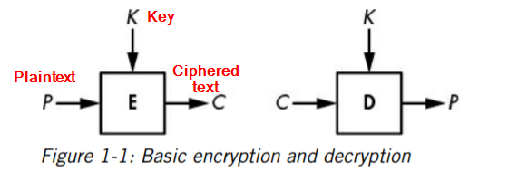

Encryptionis the principal application of cryptography; it makes data incomprehensible in order to ensure its confidentiality.
Encryption uses an algorithm called a cipherand a secret value called the key; if you don’t know the secret key, you can’t decrypt, nor can you learn any bit of information on the encrypted message—and neither can any attacker.
There are 2 types of encryption:
1) Symmetric Encryption : the key used to decrypt is the same as the key used to encrypt
2) Asymmetric/Public-key Encryption: the key used to decrypt is different from the key used to encrypt
Basics
- Plaintextrefers to the unencryptedmessage and ciphertextto the encryptedmessage.
- Encryptionturns a plaintext into a ciphertext
- Decryptionturns a ciphertext back into a plaintext.
- Cipher Text >= Plain text

Classical Ciphers
The Caesar Cipher:(Each letter was shifted with value of 3)

The Vigenere Cipher:(Each letter was shifted with value determined by a key made up of letters)

How ciphers work
Cipher contains two main component
1) Permutation (It is a function that transforms an item (in cryptography, a letter or a group of bits) such that each item has a unique inverse, With a permutation, each letter has exactly one inverse. )
2) A mode of operation (is an algorithm that uses a permutation to process messages of arbitrary size. The mode of operation (or just mode) of a cipher mitigates the exposure of duplicate letters in the plaintext by using different permutations for duplicate letters. )